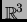

- 1
-
A. Alonso and A. Valli.
An optimal domain decomposition preconditioner for low-frequency
time-harmonic Maxwell equations.
Math. Comp., 68(226):607-631, 1999.
- 2
-
W. Bangerth, R. Hartmann, and G. Kanschat.
deal.II Differential Equations Analysis Library,
Technical Reference.
IWR, Universität Heidelberg.
http://www.dealii.org.
- 3
-
F. Brezzi and M. Fortin.
Mixed and Hybrid Finite Element Methods, volume 15 of Springer Series in Computational Mathematics.
Springer-Verlag, New York, 1991.
- 4
-
V. Girault and P.-A. Raviart.
Finite Element Approximation of the Navier-Stokes Equations,
volume 749 of Lecture Notes in Mathematics.
Springer-Verlag, Berlin, Heidelberg, 1979, 1981.
- 5
-
R. Hiptmair.
Finite elements in computational electromagnetism.
In Acta Numerica, pages 1-103. Cambridge University press,
2002.
- 6
-
P. Monk.
Analysis of a finite element method for Maxwell's equations.
SIAM J. Numer. Anal, 29:714-729, 1992.
- 7
-
P. Monk.
A simple proof for an edge element discretization of Maxwell's
equations.
Submitted for publication. Download version available on Monk's
webpage: www.math.udel.edu./ monk, 2001.
- 8
-
J. C. Nédélec.
Mixed finite elements in
.
Numer. Math., 35:315-341, 1980.
- 9
-
J. C. Nédélec.
Elements finis mixtes incompressibles pour l'équation de Stokes
dans
.
Numer. Math., 39:97-112, 1982.
- 10
-
J. C. Nédélec.
A new family of mixed finite elements in
.
Numer. Math., 50:57-81, 1986.
- 11
-
W. Rachowicz and L. Demkowicz.
A two-dimensional hp-adaptive finite element package for
electromagnetics (2Dhp90_EM).
Ticam Report 98-16, TICAM, 1998.
Download version available on Demkowicz' webpage:
www.ices.utexas.edu/ Leszek.
- 12
-
W. Rachowicz and L. Demkowicz.
A three-dimensional hp-adaptive finite element package for
electromagnetics (3Dhp90_EM).
Ticam Report 00-04.2000, TICAM, 2000.
Download version available on Demkowicz' webpage:
www.ices.utexas.edu/ Leszek.
2003-04-30